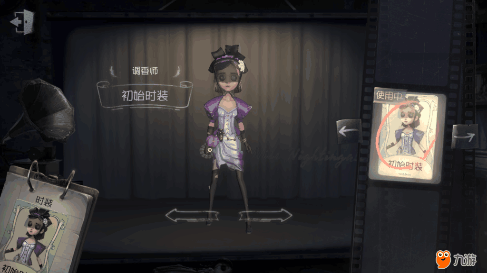
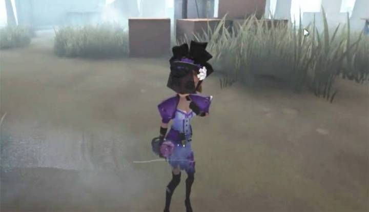

調香師

【人物介紹】
名字：薇拉‧奈爾
薇拉從黑市裡的一張神秘的香水配方中獲得靈感，調製出了獨一無二的“忘憂之香”。聞到這種芬芳的人，會沉浸其中，渾然忘我。但香水的後調是如此。短暫，任憑她如何改良都無法挽留最後，調香師對完美的執著將她引向了配方來源之地 - 莊園。
【能力介紹】
忘憂之香： 噴灑"忘憂之香"，進入沉浸狀態，記錄此刻自身的狀態和位置在技能持續時間內，可選擇遺忘此期間發生的事情，回退到記錄時刻的狀態及位置。調香師作為製作者，有額外香水使用次數。
失憶：常用忘憂之香，苦於失憶狀態在校準密碼失敗時會失去解碼邏輯，回退的進度是普通求生者的3倍。
異味敏感：對氣味敏感，不喜歡醫用器材的異味，治療所需時間增加30%。
初始道具為香水，可使用三次，通常負責干擾監管者，但一旦三瓶香水使用完畢最好盡快離開。
